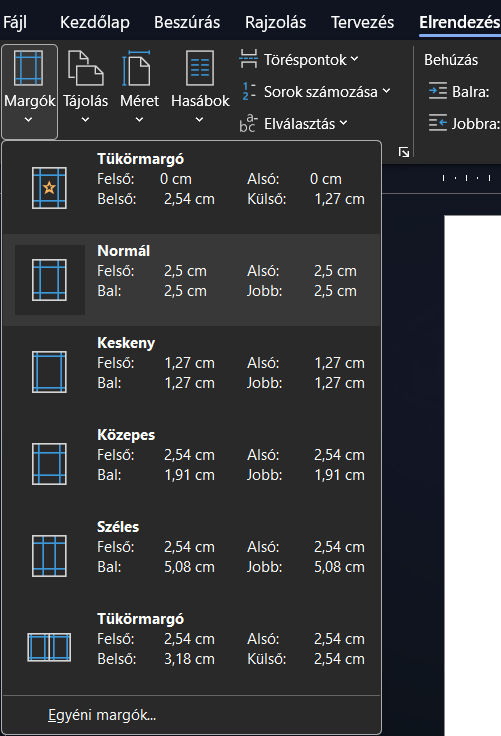
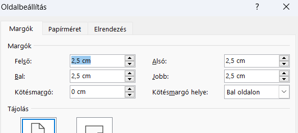
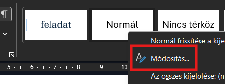
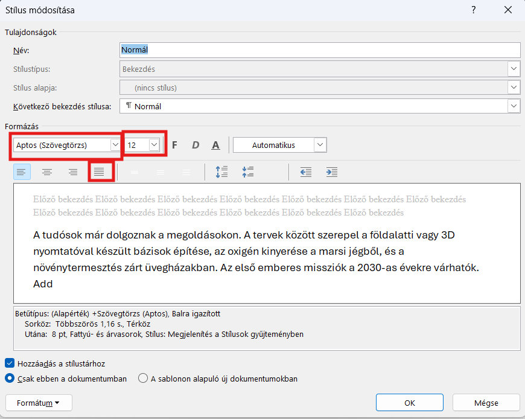
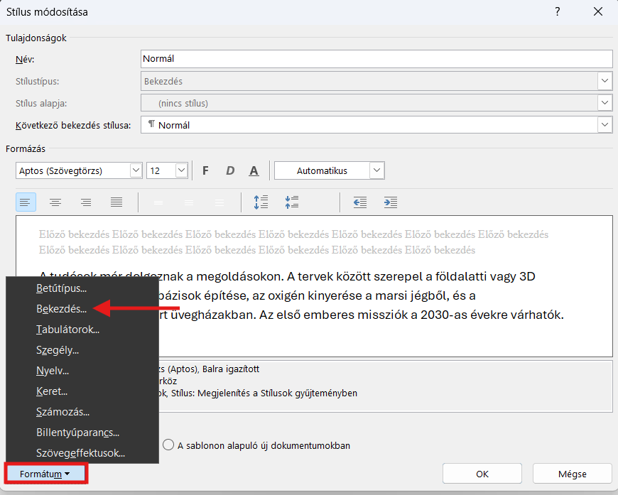
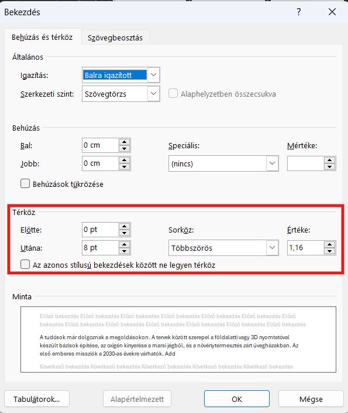
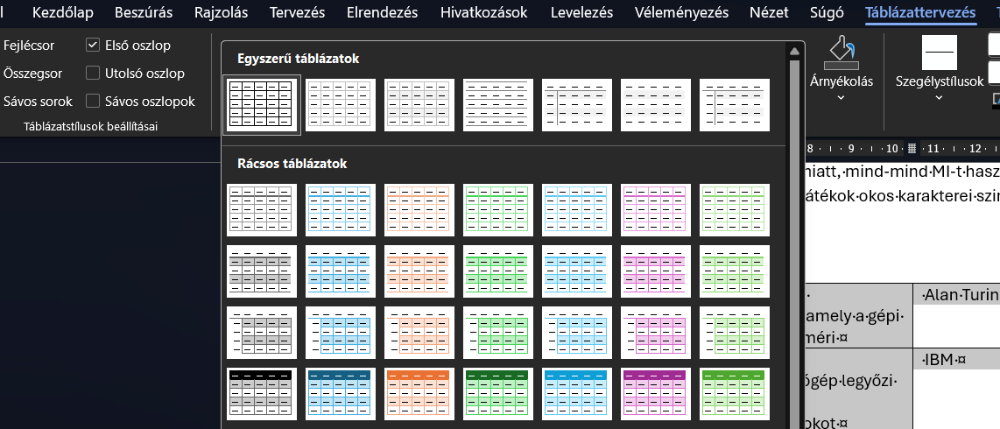
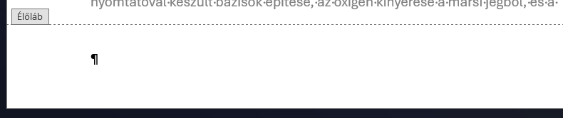
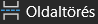

A mesterséges intelligencia világa – hosszabb szöveg önálló formázása
Ebben a dokumentumban önálló munkához találsz feladatokat. Sorban haladj, mert úgy növekszik a nehézség! Ha érted a feladatokat, akkor az Önálló feladat részben található leírás szerint gyorsan tudsz haladni. Ha valami mégsem tiszta, akkor a Könnyített lépések (segítséggel) részben találsz extra leírást és képeket.
Nyers szöveg, amivel dolgozni fogsz
A mesterséges intelligencia világa
Mi is az a mesterséges intelligencia?
A mesterséges intelligencia (röviden MI, angolul AI) az informatika egy olyan ága, amelynek célja olyan gépek és programok létrehozása, amelyek képesek az emberi gondolkodáshoz hasonló feladatokat elvégezni. Ide tartozik a tanulás, a problémamegoldás, a nyelv megértése és a környezet érzékelése. Nem egyetlen technológiáról beszélünk, hanem sokféle módszer összességéről, amelyek forradalmasítják a mindennapjainkat.
A gépi tanulás alapjai
Az MI egyik legfontosabb területe a gépi tanulás. Régebben a programozóknak minden egyes lépést pontosan meg kellett határozniuk a számítógép számára. A gépi tanulás során azonban a gép hatalmas mennyiségű adatot kap, és ezekből önállóan ismeri fel a mintázatokat. Ha például ezer képet mutatunk neki macskákról és kutyákról, egy idő után magától is el tudja dönteni egy új képről, hogy melyik állat van rajta.
Hol találkozunk az MI-vel a mindennapokban?
Sokan azt hiszik, hogy a mesterséges intelligencia csak a sci-fi filmekben létezik, pedig már most is átszövi az életünket. Amikor a telefonunk arcfelismeréssel old fel, amikor a streaming szolgáltató filmet ajánl nekünk, vagy amikor az útvonaltervező újratervezi az utat a dugó miatt, mind-mind MI-t használunk. A hangalapú asszisztensek és a modern videójátékok okos karakterei szintén ezen a technológián alapulnak.
Az MI történetének mérföldkövei
1950 - A Turing‑teszt megalkotása, amely a gépi intelligenciát méri - Alan Turing
1997 - A Deep Blue szuperszámítógép legyőzi a regnáló sakkvilágbajnokot - IBM
2011 - A Watson nevű gép megnyeri a televíziós kvízműsort az emberi bajnokok ellen - IBM
2022 - A ChatGPT nyelvi modell megjelenése, amely emberi szintű szöveggenerálásra képes - OpenAI
Veszélyek és etikai kérdések
Mint minden nagy találmánynak, az MI-nek is vannak árnyoldalai. A szakemberek folyamatosan vitáznak arról, hogyan lehet biztonságosan használni ezeket a rendszereket. Komoly kérdés a személyes adatok védelme, hiszen az MI rengeteg információt gyűjt rólunk. Emellett felmerül a munkahelyek elvesztésének félelme is, mivel a robotok egyre több olyan feladatot tudnak elvégezni, amit eddig csak emberek tudtak.
Jövőkép: Mi vár ránk?
A mesterséges intelligencia fejlődése megállíthatatlan. A jövőben valószínűleg még okosabb orvosi diagnosztikai rendszerek, teljesen önvezető autók és személyre szabott oktatási programok várnak ránk. A legfontosabb feladatunk az lesz, hogy megtanuljunk együttműködni ezekkel az eszközökkel.
1. feladat: dokumentum létrehozása, szöveg beillesztése
Önálló feladat
Másold ki a fenti szöveget! Nyisd meg a Wordöt, hozz létre egy új üres dokumentumot, és illeszd be a kimásolt szöveget! A fájlt mentsd el a saját mappádba A mesterséges intelligencia saját neved néven!
Könnyített lépések (segítséggel)
- A szöveg másolása: az egér segítségével jelöld ki a fenti szöveget a böngészőben! Jobb egérgombbal kattintva kiválaszthatod a Másolás lehetőséget, de az is jó, ha megnyomod a ctrl + c billentyűkömbinációt.

- Dokumentum készítése és a szöveg beillesztése: keresd ki a Wordöt, és nyisd meg, majd kattints az Üres dokumentum lehetőségre! itt nyomd meg a ctrl + v billentyűkombinációt!
- A dokumentum mentése: kattints a mentés gombra, vagy nyomd meg a ctrl + s gombot! A bal oldalon válaszd ki a Tallózás gombot, majd a felugró párbeszédablakban keresd meg a saját meghajtódat az Ez a gép alatt! Írd be a fájlnevet: A mesterséges intelligencia saját neved, majd kattints a Mentés gombra, vagy nyomd meg az Enter-t

2. feladat: alapbeállítások és az automatikus elválasztás
Önálló feladat (haladóknak)
Állítsd be a dokumentum margóit: a bal margó legyen 3 cm, a többi (jobb, alsó, felső) pedig 2 cm. Kapcsold be a dokumentumban az automatikus elválasztást!
Könnyített lépések (segítséggel)
- Margók: kattints a fenti menüben az Elrendezés fülre, majd bal oldalon a Margók gombra. Válaszd az Egyéni margók... opciót, és írd be a bal margóhoz, hogy 3, a többihez (alsó, felső, jobb), hogy 2.


- Automatikus elválasztás: az Elrendezés fülön keresd meg az Elválasztás menüt, és válaszd ki a párbeszédablakban az Automatikus lehetőséget!
3. feladat: stílusok beállítása és alkalmazása
Önálló feladat (haladóknak)
Módosítsd a Normál stílust: legyen 12-es méretű Times New Roman, sorkizárt, 1,15-ös sorközzel.
Módosítsd a Címsor 1 stílust: 18-as méret, félkövér, középre zárt, kék színű, és előtte-utána 12 pt térköz legyen.
Módosítsd a Címsor 2 stílust: 14-es méret, dőlt, balra zárt, kék színű.
Alkalmazd a stílusokat a szövegben lévő főcímekre és alcímekre!
A címsorok listája a szövegben:
- Mi is az a mesterséges intelligencia?
- A gépi tanulás alapjai
- Hol találkozunk az MI-vel a mindennapokban?
- Az MI történetének mérföldkövei
- Veszélyek és etikai kérdések
- Jövőkép: Mi vár ránk?
Könnyített lépések (segítséggel)
- Normál stílus módosítása: a Kezdőlap fülön, a Stílusok ablakban kattints jobb gombbal a Normál stílusra, és válaszd a Módosítás parancsot.

- Állítsd be a Times New Roman betűtípust, a 12-es méretet, és kattints a Sorkizárt ikonra.

- A bal alsó sarokban a Formátum -> Bekezdés menüben állítsd a sorközt 1,15-re. Nyomj OK-t!


- Címsorok módosítása: Ugyanígy kattints jobb gombbal a Címsor 1-re, majd Módosítás. Válaszd ki a 18-as méretet, a F (félkövér) gombot, a kék színt és a középre igazítást. A térközt itt is a Formátum -> Bekezdés menüben találod (Előtte: 12 pt, Utána: 12 pt). Csináld meg ugyanezt a Címsor 2-vel is a feladatleírás alapján!
- Stílusok alkalmazása: Jelöld ki a dokumentum legelső sorát (A mesterséges intelligencia világa), és kattints a Címsor 1 stílusra. Keresd meg a szövegben az alcímeket ("Mi is az az MI?", "A gépi tanulás alapjai", "Hol találkozunk az MI-vel a mindennapokban?", "Az AI történetének mérföldkövei", "Veszélyek és etikai kérdések", "Jövőkép: mi vár ránk?"), jelöld ki őket, és kattints a Címsor 2 stílusra. A többi szöveg maradjon Normál.
4. feladat: képek beszúrása
Önálló feladat (haladóknak)
Keress az interneten két képet, amik szerinted illenek, kapcsolódnak az AI témaköréhez! Mind a két kép 6-8 cm széles legyen, legyenek a lap oldalán (lehetnek ugyanazon és az ellentétes oldalon is), és a szöveg körülöttük négyzetesen legyen körbefuttatva. Ha gondolod, adj hozzá valamilyen effektust, pl. finom éleket vagy lekerekített sarkokat!
Könnyített lépések (segítséggel)
- Kép beszúrása: kattints a szövegben oda, ahová a képet szeretnéd. Menj a Beszúrás fülre, válaszd a Képek, majd az Online képek... lehetőséget. Keress és illessz be egy, a mesterséges intelligenciához szerinted illő képet!
- Méret és effektus: kattints a képre, majd a fenti menüsorban a Képformátum fülre. A jobb szélen a Szélességnél írd át a számot 6 és 8 közötti értékre. Ha szeretnéd, ugyanezen a fülön keresd meg a Képeffektusok gombot, menj a Lágy szélek opcióra, és válaszd ki valamelyiket.

- Hogy ne ugorjon el a szöveg: miután beszúrtad, kattints a képre. Megjelenik mellette egy kis ikon (, Elrendezési beállítások). Kattints rá, és válaszd a Négyzetes (Square) lehetőséget. Most már szabadon mozgathatod az egérrel a jobb oldalra!
- Második kép beszúrása: keress egy másik helyet a szövegben, és ismételd meg a fenti lépéseket! Ha men találsz olyan képet a Wordön belül, ami tetszik, akkor böngészőben is kereshetsz. Ezt a képet jobb egérgombbal kattintva másolhatod le (Kép másolása), majd a ctrl + v billentyűkombinációval illesztheted be.
5. feladat: táblázat készítése és formázása
Önálló feladat (haladóknak)
Keresd meg az MI történetének mérföldköveit tartalmazó 4 sort (1950-től 2022-ig). Alakítsd át ezt a szöveget táblázattá a Word beépített funkciójával, úgy, hogy az évszámok, az események és a cégek külön oszlopba kerüljenek! Formázd meg a táblázatot egy tetszőleges beépített stílussal.
Könnyített lépések (segítséggel)
Szöveg táblázattá alakítása: Jelöld ki az évszámokkal kezdődő 4 sort (1950-től a 2022-es sor végéig). Kattints a fenti Beszúrás fülre, majd a Táblázat gombra, és válaszd a Szövegből táblázat... menüpontot.
Beállítások: a felugró ablakban a Word valószínűleg felismeri, hogy a kötőjelek mentén kell elválasztani az adatokat (így 3 oszlopod lesz, ezt ellenőrizheted is). Nyomj OK-t!
- Formázás: kattints bárhová a táblázaton belül, majd a fenti Táblázattervező fülön válassz ki egy neked tetsző, színes stílust a listából.

6. feladat: élőfej és oldalszámozás
Önálló feladat (haladóknak)
Nyisd meg az Élőfej és élőláb szerkesztését! Az első oldal kivételével a többi oldalon az élőfejbe írd be: A mesterséges intelligencia világa, és igazítsd középre! Az élőlábban minden oldalon jelenjen meg az oldalszám!
Könnyített lépések (segítséggel)
- Élőfej és élőláb megnyitása: kattints duplán a lap legfelső vagy legalsó, üres részére. Megnyílik az élőfej és élőláb szerkesztője.

Cím beírása az első oldal kivételével minden oldalra: keresd meg az Élőfej és élőláb részben a Beállítások alatt az első oldal eltérő pontot, és pipáld ki a mellette levő jelölőnégyzetet!
A második oldal élőfejébe írd be, hogy A mesterséges intelligencia világa, és igazítsd középre (ezt a Kezdőlapon találod: , vagy használhatod a ctrl + e billentyűkombinációt is)!
- Oldalszám az élőlábba: menj az első oldal aljára, és az Élőfej és élőláb menüben keresd meg a bal oldalon az Oldalszám parancsot! Kattints rá, majd válaszd ki a Jelenlegi pozíció, aztán a Sima szám lehetőséget!
7. feladat: tartalomjegyzék készítése
Önálló feladat (haladóknak)
Szúrj be egy üres oldalt a dokumentum legelejére, ide pedig szúrj be egy automatikus tartalomjegyzéket, amelyben a Címsor 1 és Címsor 2 stílussal formázott részeket jeleníted meg! Ha szeretnéd, dekoráld valahogyan az oldalt: tehetsz rá egy képet vagy valamilyen grafikát.
Könnyített lépések (segítséggel)
- Üres oldal beszúrása a dokumentum elejére: ehhez egy ún. (úgynevezett) oldaltörést kell beszúrnunk. Ehhez a legegyszerűbb a dokumentum legelejére menned, majd a ctrl + Enter billentyűkombinációval brszúrnod egy oldaltörést, de az Elrendezés menü Töréspontok pontja alatt, valamint a Beszúrás fül alatt is megtalálod az Oldaltörést:

. A Beszúrás fülön Üres oldal lehetőséget is találsz, ezzel is oldaltörést szúrsz be.
Automatikus tartalomjegyzék: ehhez kivételesen a Hivatkozások fülre kell menni, és itt a Tartalom pontra, majd valamelyik Automatikus tartalomjegyzék lehetőségre kattintani.
8. feladat: a munka beadása
Add be a helyes néven elmentett munkát!
Mentsd el a munkádat, nyisd meg a Fájlkezelőt, és másold be a Dolgozatok megosztott meghajtóra! Ha beküldted, kérdezd meg, hogy megkaptam-e! Ha nem tudod, mit kell csinálni, akkor nézd meg az alsó sorban a lebegő leírást!


 )! Itt a Kezdőképernyő alatt (ez jelenik meg automatikusan) látnod kell az éppen most elmentett fájlodat. Kattints erre egyszer, hogy kijelöld (nem akarjuk megnyitni, ezért ne duplán; ha mégis duplán kattintottál, akkor térj vissza a pont elejére!), majd nyomd meg a
)! Itt a Kezdőképernyő alatt (ez jelenik meg automatikusan) látnod kell az éppen most elmentett fájlodat. Kattints erre egyszer, hogy kijelöld (nem akarjuk megnyitni, ezért ne duplán; ha mégis duplán kattintottál, akkor térj vissza a pont elejére!), majd nyomd meg a